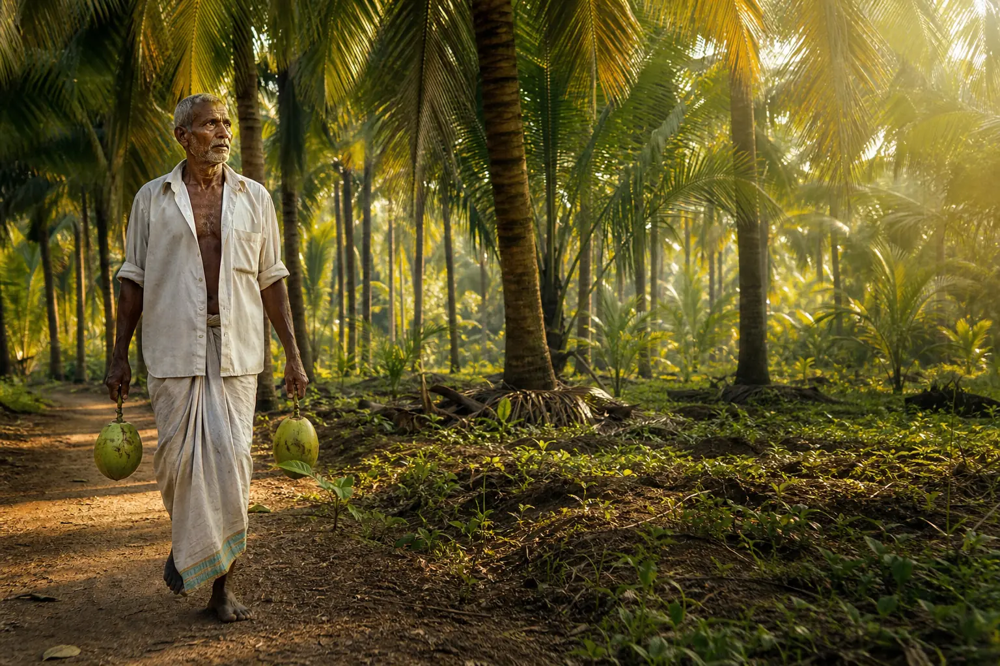

Thoughtful harvest
Only mature, healthy coconuts are hand-selected from trusted local groves.
Built around one simple belief: when you respect the land, the people and the process, the result speaks for itself.

CocoLanka began in Matara with a few acres of palms and a desire to make coconut products that tasted the way we remembered them—fresh, fragrant and honest.
Today, our circle has grown to include independent farming families across the south. We buy fairly, process close to harvest and create products we are proud to serve at our own table.
Only mature, healthy coconuts are hand-selected from trusted local groves.
Every coconut is cleaned and prepared close to the farms that grew it.
Low-temperature, small-batch methods retain aroma, texture and character.
Products are packed securely and sent island-wide with personal care.
Long-term relationships and fair purchasing give local growers dependable income.
We use the whole coconut wherever possible and continuously reduce packaging waste.
Clear ingredients, careful batches and no claims we cannot proudly stand behind.